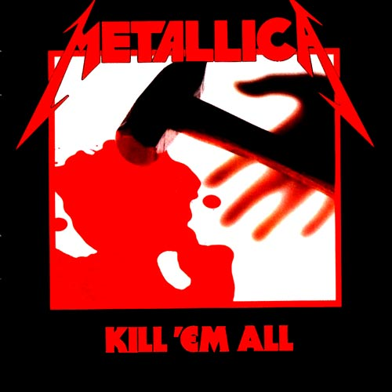
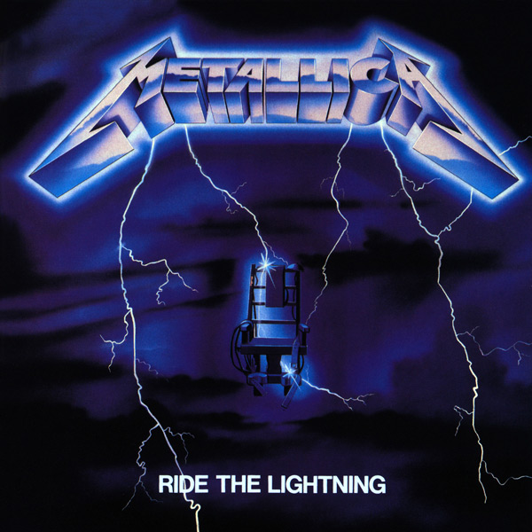
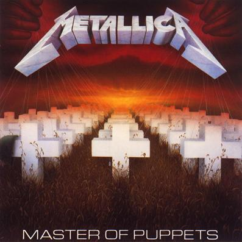

Kill 'Em All — первый дебютный студийный альбом, выпущенный 25 июля 1983 года.

Ride the Lightning — второй студийный альбом, вышедший 27 июля 1984 года.

Master of Puppets — третий студийный альбом, выпущенный 3 марта 1986.
